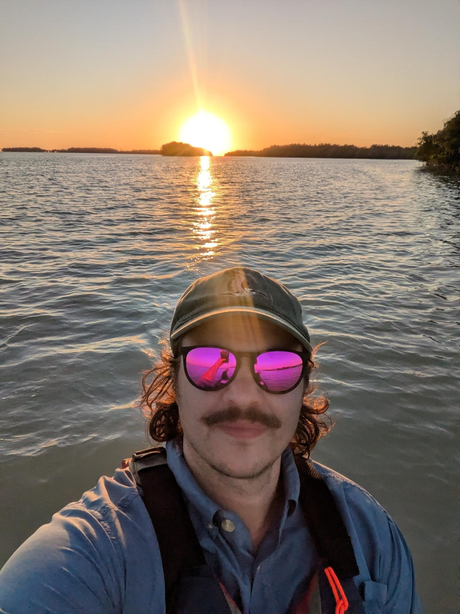

Our Team

Corey Payne, PhD
Independent Program Evaluation Consultant
Specializing in Federally Funded Higher Education Initiatives
I am an independent program evaluation consultant with extensive experience supporting federally funded higher education initiatives, including Department of Education–aligned grants. I partner with universities and cross-institutional teams to design and implement rigorous formative and summative evaluation frameworks that strengthen program effectiveness and ensure federal compliance.
I have led large-scale evaluations across multi-institution partnerships, including Minority Serving Institutions, with responsibility for evaluation design, instrument development, data collection, analysis, and reporting. My work supports grant competitiveness, performance metric alignment, and actionable continuous improvement.

Julie Walker, PhD
Interdisciplinary Ecologist & Coastal Ecosystem Specialist
Program Manager, MassMarsh
I am an interdisciplinary ecologist specializing in coastal ecosystems, with a focus on how climate change and human modifications influence the structure, function, and resilience of saltmarsh and mangrove systems. My research integrates field-based studies, geospatial analysis, and historical data to assess ecosystem vulnerability to sea-level rise and inform adaptive management strategies.
My work spans academia, government, and applied management contexts. In my current role as Program Manager for the MassMarsh program, I lead an interdisciplinary network of academic, NGO, and government partners to support coordinated monitoring and management of Massachusetts salt marshes. My earlier experience with the Chesapeake Bay Program and as a Visiting Assistant Professor reflects my commitment to science communication, education, and the integration of research into policy and practice.